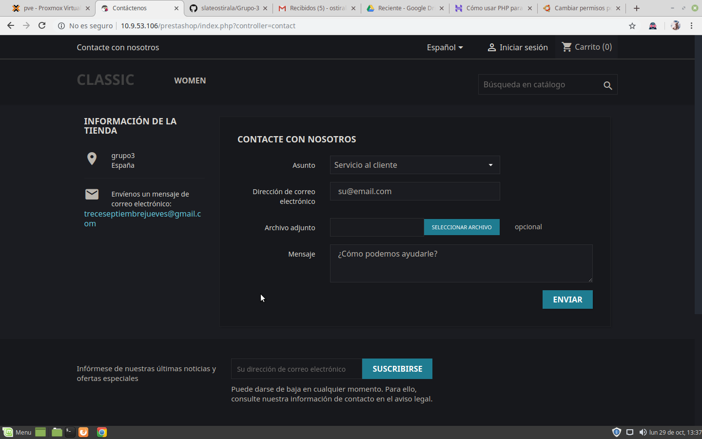

Plataforma donde cualquier empresa crea y gestiona su tienda online
PHP 5.2 o superior
MySQL 5.0 o superior
El hosting es Unix/Linux ( Recomendado )
Servidor Apache Web 1.3 o superior
64 Mb de RAM dedicados a PHP. (Mínimo)
Códigos de acceso (cuentas de acceso) a su servidor mediante protocolo FTP y a su base de datos MySQL
Cualquier editor de textos
Cualquier cliente FTP
También necesita la URL gracias a la cual la tienda va a estar visibles en internet
Instalación y creación de Base de Datos
Crear Base de Datos:
CREATE DATABASE prestashop;
Crear usuario:
CREATE USER ‘grupo3’ IDENTIFIED BY ‘grupo3’;
Dar privilegios al usuario:
GRANT ALL PRIVILEGES ON prestashop.* TO ‘prestashop’;
Habilitar módulos Apache
sudo a2enmod rewrite
sudo a2enmod headers
Finalmente instalaremos PrestaShop, para ello, iremos a la carpeta html
cd/var/www/html
Creamos un directorio para PrestaShop
mkdir prestashop
Concedemos permisos sobre el directorio de PrestaShop
chmod -R 777 prestashop
Entramos en el directorio
cd prestashop
Descargamos PrestaShop
wget https://download.prestashop.com/download/release /prestashop_1.7.1.1.zip
Descomprimimos
unzip prestashop_1.7.1.1.zip
Accediendo a nuestro servidor de PrestaShop
Desde nuestro navegador web
Escribiremos nuestra dirección IP/prestashop/
Dentro de la dirección, completar los diferentes requisitos que nos aparezcan
Escoger el idioma
Aceptar la licencia
Comprobar la compatibilidad
Facilitaremos los datos de la tienda
Indicamos los datos de la Base de Datos que hemos creado antes
PrestaShop inicia su instalación

Fin de la instalación

Se muestra la pagina principal
Contactar con el administrador de la tienda
